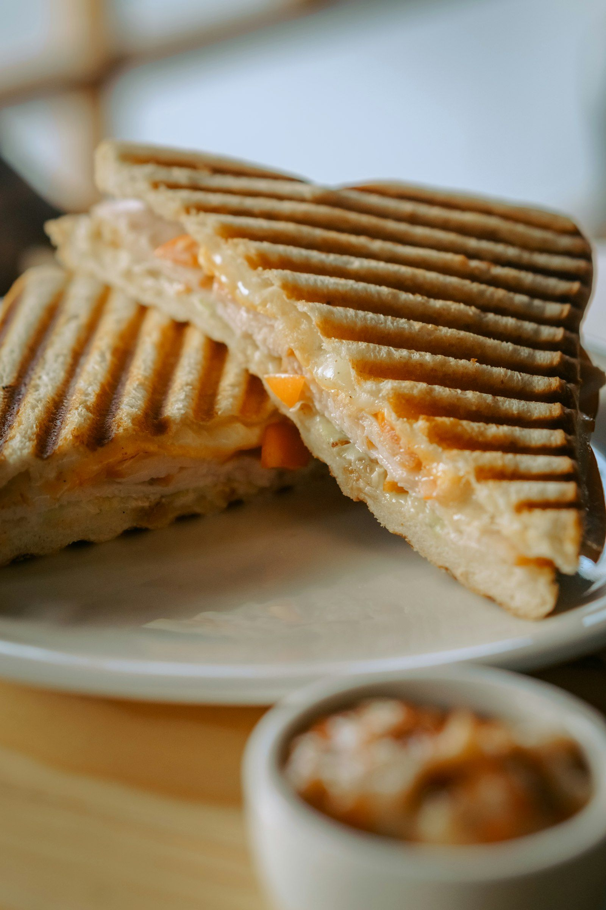

Baguettes
Dagelijks worden onze baguettes vers afgebakken. U kiest uit diverse vers belegde baguettes of andere soorten broodjes.
Naar de baguettes
Sinds 2001 een begrip in Oisterwijk en omstreken. Binnen, op het terras onder de kastanjebomen of snel mee voor de trein.
Broodjesservice 't Stationneke is opgericht in 2001 en sindsdien een begrip in Oisterwijk en omstreken. Wij zitten gevestigd in de voormalige wachtkamer van het station in Oisterwijk. Dit station dateert van 1874 en is een rijksmonument.
U kunt bij ons terecht voor verse belegde broodjes en de allerbeste koffie. Wij zijn gespecialiseerd in het bezorgen van broodjes aan bedrijven, instellingen, condoleances en meer. Ook kunt u buiten op ons riante terras onder de kastanjebomen genieten van een lekker broodje en een goede kop koffie.
Moet u de trein pakken? Kom even snel binnen en neem een broodje mee. Kortom: 't Stationneke is dé broodjeszaak in Oisterwijk waar kwaliteit, gezelligheid en verse producten centraal staan.
Onthaast en geniet van een duurzaam moment!

Dagelijks worden onze baguettes vers afgebakken. U kiest uit diverse vers belegde baguettes of andere soorten broodjes.
Naar de baguettesOok voor alleen een drankje kunt u bij ons terecht. Buiten in het zonnetje of gezellig bij ons binnen.
Naar de drankenEen lunch, vergadering, overwerken of gewoon zin in een lekker broodje? Bekijk de menukaart en bestel telefonisch.
Zo werkt bezorgenStandaard met verse sla, komkommer, tomaat, augurk, zilveruitjes, ei, dressing en peper.

Alle salades zijn voorzien van sla, tomaat, komkommer en augurk.

Baguettes 't Stationneke is al enkele jaren actief met het bezorgen van broodjes aan hoofdzakelijk bedrijven in en rond Oisterwijk. Voor een lunch, vergadering, bijeenkomst of als u moet overwerken.
Een speciaal aangepast, handzaam broodje voor bedrijven. Geleverd in dozen of op schaal, ideaal voor vergaderingen, bijeenkomsten en besprekingen. Voor speciale gelegenheden kunnen wij de broodjes extra luxe beleggen, in overleg.
U kunt telefonisch bestellen of online via ons bestelformulier. Online bestellingen graag minimaal 1 dag van tevoren.
Dinsdag t/m zaterdag
09.30 – 16.00 uur
Uitgezonderd feestdagen